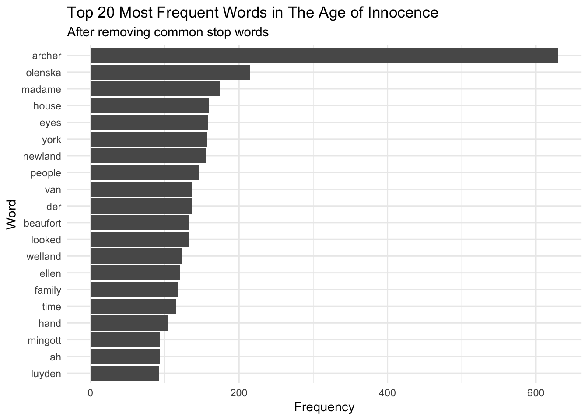

library(pacman)
p_load(tidyverse,tidytext,wordcloud,gutenbergr)
# Function to download and process text
gutenberg_works(title == "The Age of Innocence")# A tibble: 1 × 8
gutenberg_id title author gutenberg_author_id language gutenberg_bookshelf
<int> <chr> <chr> <int> <chr> <chr>
1 541 The Age … Whart… 104 en Movie Books/Bestse…
# ℹ 2 more variables: rights <chr>, has_text <lgl> inno <- gutenberg_download(541)
# Analyze word frequencies
word_freq <- inno %>%
unnest_tokens(word, text) %>%
anti_join(stop_words) %>%
count(word, sort = TRUE) %>%
top_n(20, n)
# Create a bar plot of word frequencies
p <- ggplot(word_freq, aes(x = reorder(word, n), y = n)) +
geom_col() +
coord_flip() +
labs(x = "Word", y = "Frequency",
title = "Top 20 Most Frequent Words in The Age of Innocence",
subtitle = "After removing common stop words") +
theme_minimal()
# Print the plot
print(p)